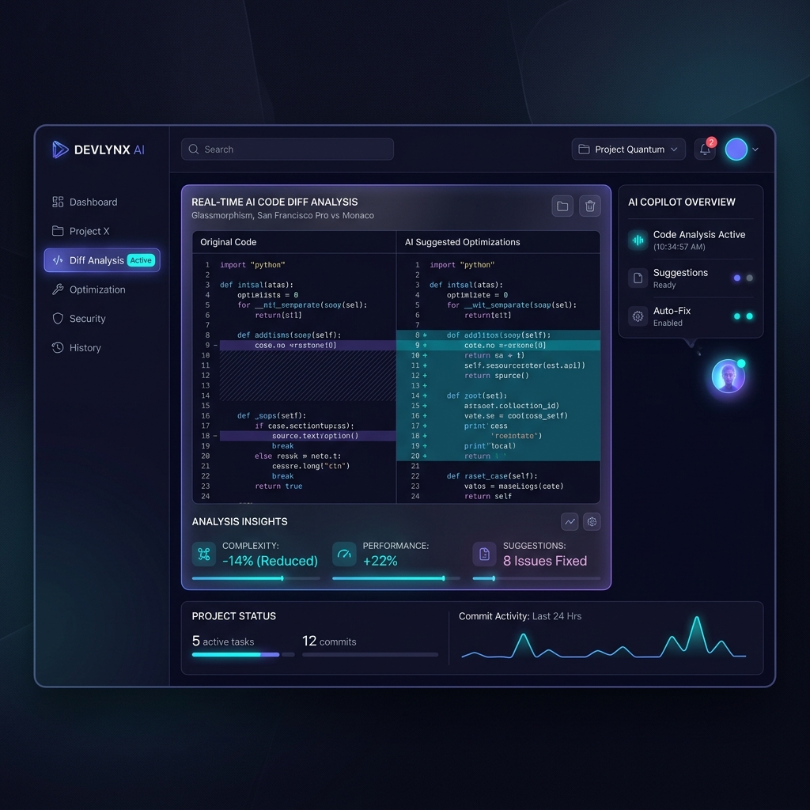

DevAgent Studio connects directly to your repository to automate pull requests, refactor multi-file architectures, and run self-healing unit test pipelines.

Parses function signatures, module imports, and typescript interfaces to supply exact token-optimized context to Claude Sonnet endpoints.
Automatically executes your local unit tests. If assertions fail, error logs are analyzed by Claude API to iteratively repair patches.
Your full source code never leaves your workstation—only scoped AST diff snippets are processed securely through your own Claude Console keys.
Tree-sitter parser indexes codebase functions, dependencies, and type exports.
Structured prompts query Claude Sonnet API for complex code synthesis.
Executes local test runner & automatically opens verified GitHub PRs.
# Install DevAgent CLI globally via npm
npm install -g @devagent-studio/cli
# Configure your Claude API Key
export ANTHROPIC_API_KEY="your-claude-api-key"
# Launch autonomous task in your repo
devagent run --task "Add unit tests for user authentication"